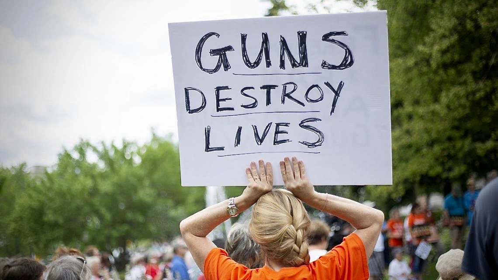
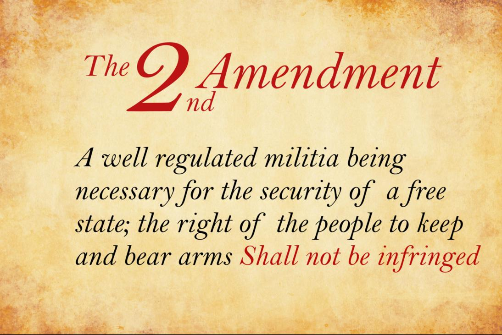
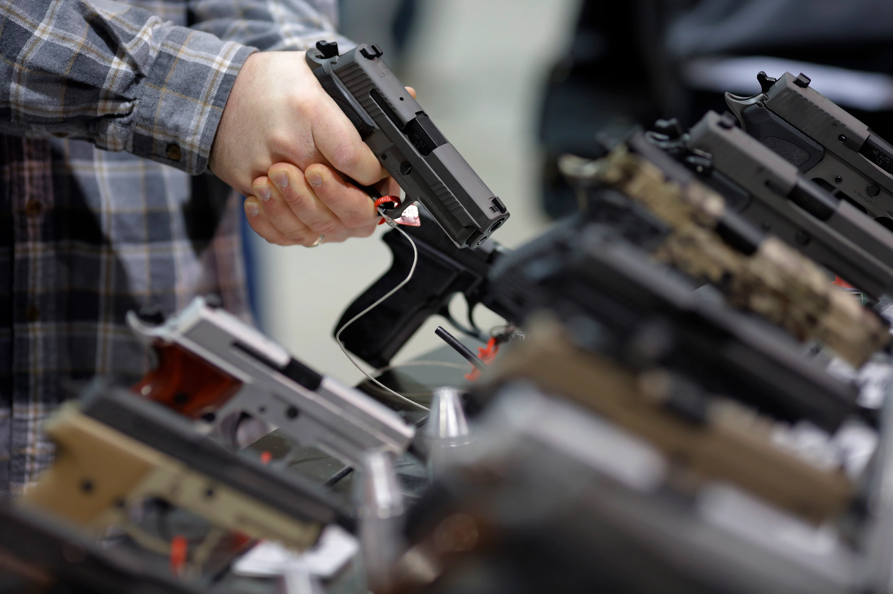

Author Ella Rivera is a Undergraduate student studying Magazine and Digital Jouranlaism at the S.I Newhouse School of Communications



images provided by google
The second amendment states “A well regulated Militia, being necessary to the security of a free State, the right of the people to keep and bear Arms, shall not be infringed.” The idea of this amendment was created with the intent of protecting ourselves from our government. Now, looking back on American history we must question whether or not this has protected us or damaged us as a society.
Over the past 40 years, the United States has proved itself to be one of the world’s leading countries in deaths related to firearms. In the years from 1981 to 2019 and the present day, deaths due to firearms have only increased. These firearm deaths include those of suicide, homicide, legal intervention, unintentional, and those that are undetermined. Out of these deaths, suicide by firearm is the leading cause of death in the United States. The number of suicide deaths has increased over the past 40 years. In 1981 there were 34,050 deaths and in 2019 there were 39,707. In 2021 suicide remains the number one cause of death due to firearms.
Our constitution allows for every citizen of the United States over the legal age legally allowed to own a firearm. Nonetheless, each state has its laws surrounding access to firearms. The less strict gun laws are in each state the more likely there are to be more deaths caused by firearms. This is a direct correlation that can be seen in the number of deaths caused by firearms in states where gun laws are either taken very seriously or very lightly.
Florida law states “As long as you are 18 or older, you may carry a concealed firearm or weapon without a concealed weapons permit in Florida, so long as it is “within the interior of a private conveyance and the weapon is securely encased or is otherwise not readily accessible for immediate use. Because these laws are less restrictive and protective than other States it is more accessible and more common for citizens to own a firearm. According to 77-year-old Florida resident Sherriane Zinsner “I got my first firearm last year. I purchased it specifically for protection. If an intruder were to break into the house I want to know that we have the gun as a means of protection and defense.” When I asked her how she felt about the majority of Florida citizens having access to and owning firearms today she seemed unsure of how safe it made her feel. She stated “It doesn't necessarily make me feel safer that other people have guns because I know that not everyone is using them for means of protection. But I don't want to be told that I cannot own a gun by our government and neither do they.” This way of thinking seems to be a common theme in many U.S citizens who strongly stand by the 2nd amendment. It does not change the fact that Florida has one of the larger numbers of deaths due to firearms in the United States.
On the other hand where Gun laws are much more strict New York states “Residents need permits both to purchase and possess handguns. Residents must be at least 21 years old to apply for a permit to possess a handgun unless they were honorably discharged from the military, in which case they may apply if they are 18 years old or older.” Former Rye New York police officer Michael Kenny says “ I do still own a gun, but even though I own a gun I do not believe that everyone should have one. If you have access to a firearm it comes with responsibility and the owner must have the skills and responsibility to be held accountable for whatever they do with said firearm.” When asked how he feels about the death rate in correlation to access to guns in NYC he reflected on the past years by saying that “ with COVID-19 gun violence has skyrocketed. More people now have access to guns not because of the laws that are put in place but because of the illegal sales of firearms and other weapons. That is what is leading to the higher death rate.”
One last statistic that also correlates with the accessibility to firearms in the U.S is the Firearm deaths per age group. The age group with the most deaths due to firearms are people ages 20- 34. Out of all these people more men have died from firearm deaths. Younger people, specifically young men in their 20s and 30s are at the highest risk of dying from gun related events. This is due to many factors such as gun violence, being at the legal age to purchase a gun and many more.
So all this information begs the question are firearms good or bad for our country. After doing this research I can conclude that more restrictive gun policies are more beneficial. Not everyone should be able to have a gun, If they do however they should have it registered, insured. I also believe that if these changes are made with the protection of our citizens in mind we will be able to have a safer country and less deaths caused by firearms.
Source:Link to Data